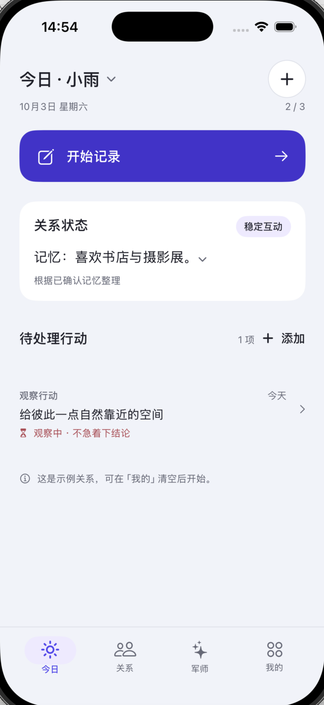
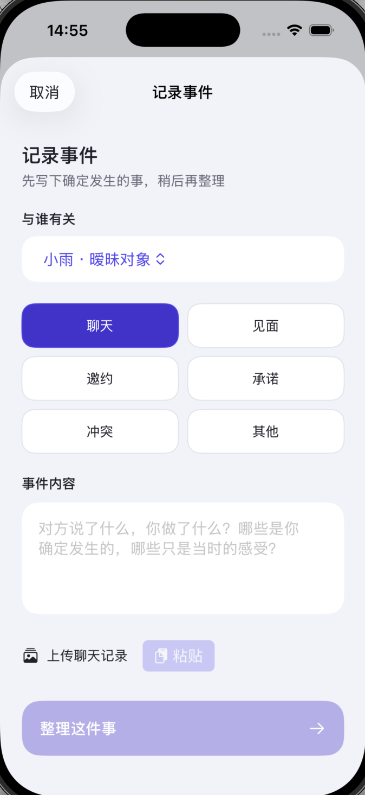
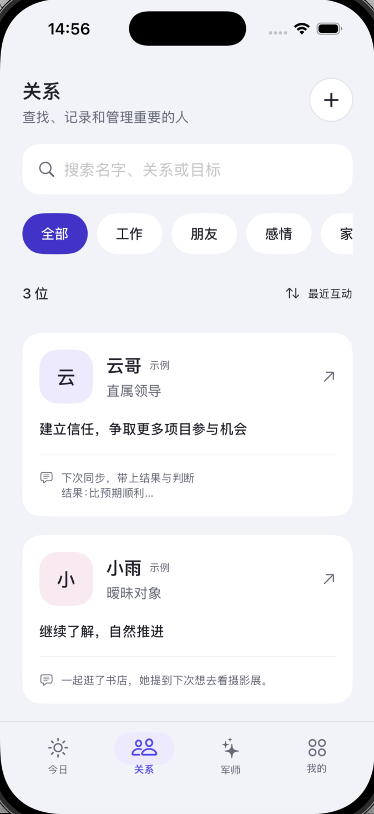
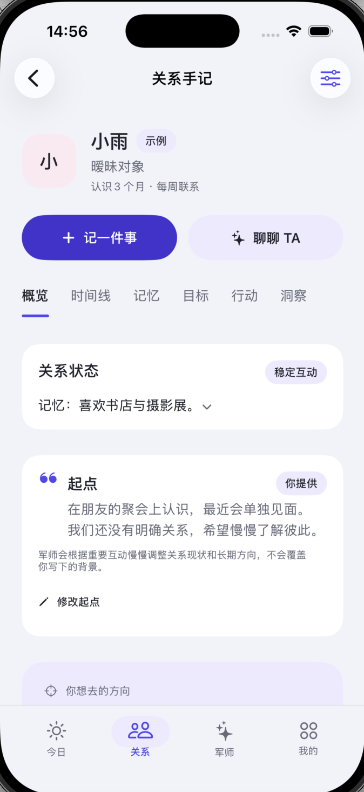

记下发生过的
用自己的话记录事件，也可以导入截图识字；核对后再保存进时间线。
一份关于重要关系的长期记录
关系不是一句话。知间帮你记住重要的人与共同经历，在需要时，把眼前的问题放回完整的上下文里看。
为 iPhone 设计 · iOS 18+

很多工具帮你生成一句回复。知间更关心：这个人是谁，你们之间发生过什么，你希望这段关系走向哪里。
把事件、记忆、目标和行动放在一起，才有机会做出更贴近现实的判断。
用自己的话记录事件，也可以导入截图识字；核对后再保存进时间线。
为每个人整理背景、目标与重要记忆。事实和模型推断分开呈现，也可以随时修正。
结合关系目标与互动记录讨论行动；执行结果再回到关系时间线。
从一次记录开始，
把零散的互动，慢慢连成理解。
不是速成答案，是持续理解
不需要一开始就把所有事情想清楚。记录一点，再往前走一点。
什么时候发生、你看见了什么，由你确认后写入。
结合你保存的背景、目标和记忆，梳理可能的含义。
先由你判断是否采用。实际反馈会成为后续理解的一部分。
来自 iPhone 17 模拟器的知间界面
以下为最新版本 App 的实际界面截图。人物与关系记录均为应用内示例内容。

从事件类型和自己的描述开始，核对后再整理。

按关系类别查找，回到每个人的共同经历。

浏览关系状态、时间线、记忆、目标和行动。
关系很私密，工具更要克制
知间帮助你整理自己提供的关系信息，不通过猜测填补空白，也不替你做关系决定。
关系资料保存在你的设备中。云端 AI 与记忆功能需要 Apple 登录。
你可以关闭自动记忆。原始军师对话不会作为长期记忆正文保存。
模型判断不是事实。它会和已确认信息分开，你可以修改或删除记录。
知间提供思路和回复建议。不会代替你联系别人，也不会自动发送消息。
知间目前主要面向 iPhone，系统要求 iOS 18 或更新版本。产品功能和服务范围会随着版本迭代调整。
关系值得被认真对待